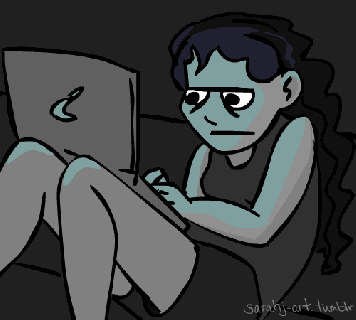

Muchas personas que se sienten solas, que tienen dificultad para relacionarse con otras o que sufren trastornos como las depresiones, encuentran en internet una vía de escape que les permite hablar con otras personas, comprar todo tipo de cosas e incluso crear un rol. En este sentido, se puede decir que la red cubre la necesidad básica de relacionarnos con otras personas, puesto que el ser humano es un ser social por naturaleza y necesita interactuar y hablar con otras personas.

Lo importante es prevenirla antes de la adolescencia porque esto no sucede de la noche a la mañana. Los niños de
ocho años como máximo tendrían que estar conectados de 30 a 40 minutos y sabemos que están conectados hasta tres
horas seguidas.
Lo que es importante al hablar de prevención sería controlar el tiempo de uso, controlar los contenidos a los que
tienen acceso y enseñarles un uso inteligente de la información porque, como decimos, no es malo internet.
También debemos intentar que los ordenadores estén en un sitio familiar, que no estén en el cuarto encerrados, sino,
por ejemplo, que estén en el salón, así para los padres es más fácil saber cuánto tiempo están y que están mirando.
Y, sobre todo, la clave en casi todo en la vida es la paciencia y el sentido común.
En primer lugar es imprescindible realizar una evaluación clínica del problema que se iniciará completando la historia clínica. En esta fase el profesional recoge datos sobre el uso de las nuevas tecnologías (Internet, chats, redes sociales, móvil o smartphones…), y se exploran otros aspectos de cómo se siente la persona, qué función cumple el uso de las redes sociales e internet en su vida, qué actividades lleva a cabo dentro de la Red, cuánto tiempo, qué pasaría si no puede usarlas, si se ha sentido mal o culpable por pasar mucho tiempo conectado y cómo ha influido esto en su quehacer diario, entre otras cuestiones.
La evaluación clínica se completa con información acerca de la personalidad y el entorno socio familiar del paciente, lo que nos va a dar información acerca de los aspectos psicológicos o psiquiátricos que forman parte del problema.
Tras la evaluación y el diagnóstico, diseñamos con el paciente un plan informado de tratamiento, que incluirá los objetivos y aspectos a tratar, así como las posibles incidencias y las alternativas que tenemos a nuestra disposición.
Toda esta información se ve explicada y detallada en un Modelo Explicativo que recoge todos los factores asociados al problema y la relación entre ellos, así como los criterios de valoración y los objetivos propuestos.
Se trabajarán aspectos psicológicos y de aprendizaje encaminados a:
La intervención en este tipo de adicciones se realiza en la mayoría de las ocasiones desde la vertiente psicológica, pero en ocasiones es necesario complementarlo con la psicofarmacológica, ambas actúan unidas creando sinergias que facilitan el adecuado progreso en la terapia psicológica.
La farmacología se elegirá en función de la gravedad y la repercusión del problema en la vida de la persona.
Los rasgos de personalidad más coherentes con el tratamiento farmacológico, tal vez por estar relacionados más directamente con procesos biológicos, son la distorsión cognitiva, el déficit en el control de impulsos, la inestabilidad afectiva y el nivel de ansiedad.
El juego patológico o la adicción a internet pueden estar relacionados con elevados niveles de tristeza, ansiedad o sus manifestaciones orgánicas (palpitaciones, sensación de falta de aire, “nudo” en el estómago, sudoración…). En función de cómo estén presentes en la persona y afecten a su vida y bienestar, pueden considerarse útiles los fármacos encaminados a disminuir la intensidad, la impulsividad, las oscilaciones del ánimo y las manifestaciones ansiosas. En este sentido los antidepresivos denominados “inhibidores selectivos de la recaptación de serotonina” (ISRS) pueden mejorar (independientemente de que exista depresión o no) la impulsividad y la ansiedad elevadas.
El aspecto de la distorsión cognitiva se aborda farmacológicamente con un tipo de medicamento denominado “antipsicótico” y pretende disminuir la ansiedad e interpretaciones distorsionadas que generan sufrimiento para la persona que las presenta, viviendo en una “realidad propia” generalmente amenazadora de la que se “protegen” con el aislamiento o “refugio” en actividades solitarias como podrían ser Internet, juegos online o el uso del móvil; en ocasiones podría corresponder a los inicios de una enfermedad psiquiátrica más grave.
En otros casos, pueden presentarse conjuntamente un TDAH y un uso desmedido y perjudicial de internet, videojuegos o redes sociales, situación en la que podríamos plantear un tratamiento combinado de psicoeducación, técnicas cognitivo conductuales y fármacos como el metilfenidato.
Es importante que la indicación y prescripción de estos medicamentos la lleve a cabo un médico psiquiatra, que tendrá en cuenta todo lo anterior a la hora de evaluar el problema, y cuyo objetivo último es lograr que la persona esté en disposición de trabajar los mecanismos de afrontamiento psicológico de un modo más eficaz y avance hacia la autosuficiencia.